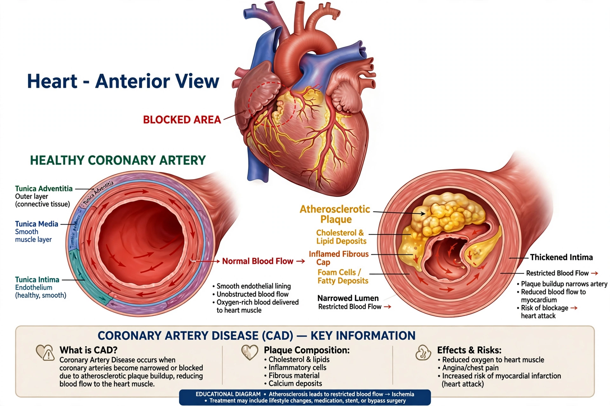

| Coronary artery disease | |
|---|---|
 | |
| Specialty | Cardiology |
| Symptoms | Chest pain (angina), shortness of breath; sometimes none |
| Complications | Myocardial infarction, heart failure, arrhythmia |
| Risk factors | High LDL, smoking, diabetes, hypertension, obesity |
Coronary artery disease (CAD), also called coronary heart disease or ischemic heart disease, is the most common type of heart disease and a leading cause of death worldwide. It results from atherosclerosis — plaque buildup, rich in cholesterol carried by particles such as apolipoprotein B-containing lipoproteins — narrowing the coronary arteries that supply the heart muscle.
Reduced blood flow causes angina pectoris, typically exertional chest discomfort relieved by rest or nitroglycerin. Plaque rupture with thrombosis causes acute coronary syndrome: unstable angina or myocardial infarction (heart attack), which may be fatal or leave heart failure.
Risk factors include high LDL cholesterol and low HDL, smoking, diabetes, hypertension, inactivity, and family history. Prevention and treatment centre on lifestyle change, statins, antiplatelet agents, blood-pressure control, and, when indicated, percutaneous coronary intervention (stenting) or coronary artery bypass grafting.
History, ECG, stress testing, coronary CT angiography, and invasive coronary angiography establish the diagnosis; troponin detects myocardial injury.